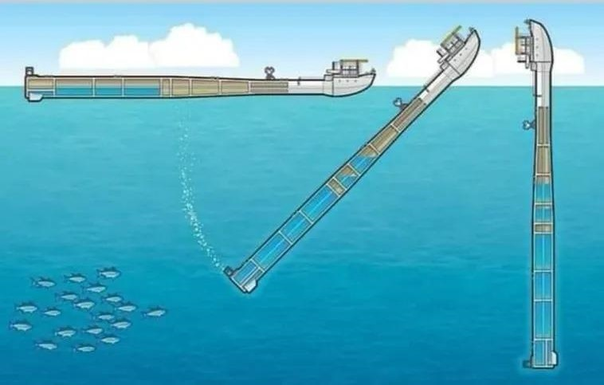
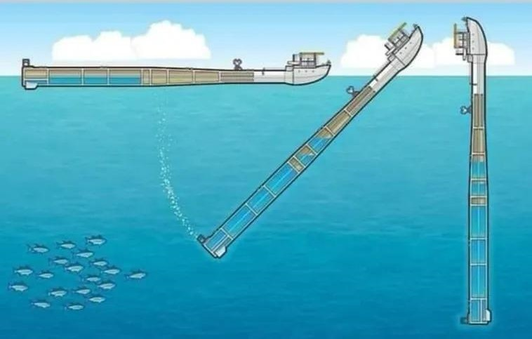

Digitix08's Testsite
Platforma plutitoare “RV FLIP”
Construcții și Arhitectură: 26 / 09.10.2024
 

“RV Flip” este o navă de cercetare unică operată de Instituția Scripps de Oceanografie. A fost proiectată și construită în 1962 de către Laboratorul de Fizică Marină din Scripps. Nava de cercetare RV Flip, cu o lungime de 108m, este singura din lume capabilă să treacă de la poziția orizontală la cea verticală în mijlocul oceanului, ce permite efectuarea de investigații într-o serie de domenii, inclusiv acustică, oceanografie, meteorologie și observarea mamiferelor marine
În poziția sa verticală, nava FLIP este extrem de stabilă, rezistând valurilor oceanului fără balansare semnificativă. Această stabilitate este crucială pentru diferite măsurători și experimente oceanografice. Nava este echipată cu spații de locuit pentru echipaj și oameni de știință, inclusiv zone de dormit, o bucătărie și spații de lucru funcționale atât pe orizontală, cât și pe verticală.
Întoarcerea se realizează prin sabordare (un termen nautic pentru scufundarea intenționată) a capătului tubular balastat al platformei. Această scufundare controlată, parțială - adesea cu dotarea completă de personal și echipament la bord - este executată cu precizie și expertiză de către echipaj. Deși întregul proces durează 20-30 de minute, cea mai mare parte a mișcării are loc în aproximativ 90 de secunde, ducând platforma de la un unghi de mai puțin de 20° la complet verticală.